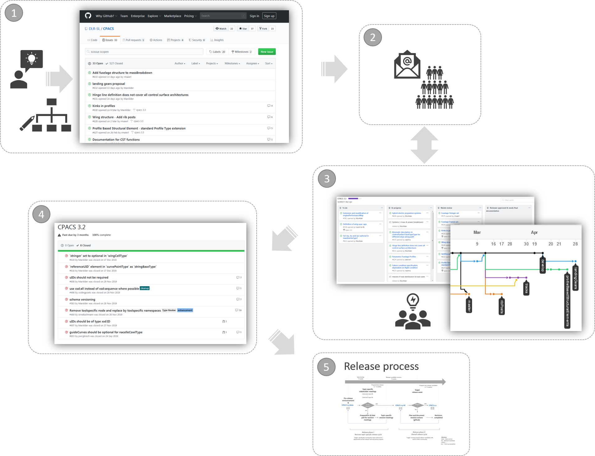
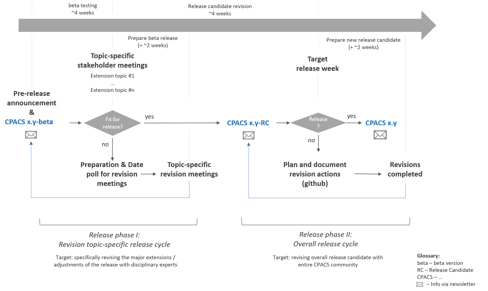

How to contribute
CPACS is a joint development by a large aircraft and helicopter design and optimisation community from industry, universities and research institutions. Any idea or proposal for improvement is welcome, and the development process below is meant to make it easier to bring one in.
Proposals are shared with the community on these platforms:
- GitHub issue board
- GitHub discussion forum
- Working groups, announced via GitHub and the mailing list
- Stakeholder meetings, announced via the mailing list
What development means here
The way information is modelled in CPACS files is prescribed by the XML Schema Document. Developing CPACS therefore means, in a technical sense, implementing an idea in the cpacs_schema.xsd and agreeing on the structure of the data: how elements are named and interlinked, how often they may occur, which data types are used.
In the multidisciplinary environment in which aeronautical systems are developed today, the greatest challenge is to account for the different perspectives of the disciplines and their varying degrees of fidelity, while keeping to the single source of truth principle:
Data must be explicit and unique.
So the major part of the development is discussion in working groups and the basic design of the data hierarchy. Do not be put off by the technical details of the XML Schema, and do not worry if you are not an experienced programmer. Any visualisation of an idea — a tree diagram drawn in PowerPoint or Excel — is already a very helpful step towards a new CPACS implementation.
If your ideas are already precise, the development subdirectory of the CPACS source files carries further detail on the process.

Development process
There is no prescribed sequence, but development generally follows these steps.
- Share your idea or change request with the community, preferably with the underlying use case and a first draft of a solution. Use the GitHub issue board to illustrate the proposal, for example as a tree diagram of a possible data hierarchy.
- The CPACS coordinator helps identify the relevant stakeholders, for example via the mailing list.
- Not every stakeholder wants the details, but most want to follow the general progress so they can bring in their own requirements. A smaller working group therefore works out the detailed proposal for the XSD implementation, while an iterative exchange with the full stakeholder group keeps all requirements in view and the working group agile. Progress is tracked openly through Kanban boards and the network graph.
- The activity is assigned to a milestone, which is essentially the targeted release version. Once the proposal is complete, the coordinator labels the milestone as closed, so it appears on the milestone list next to the other enhancements and changes.
- The proposal is then ready for the release process described below.

Release process
The release process informs all stakeholders and brings their ideas and requirements into further revisions. Two kinds of preliminary version are published before a final release.
- Beta releases carry all modifications and enhancements from the development process. As a prototype they are meant to be tested in practice, and further changes can be incorporated flexibly depending on that experience.
- Release candidates are close to the final version, and major adjustments should be avoided. A release candidate serves as the final review before the official release.
